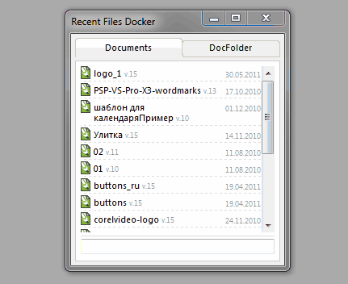
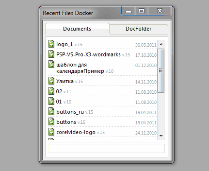
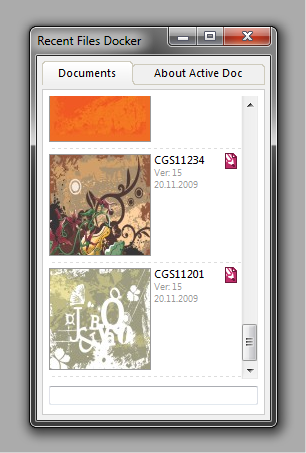

Докер RecentFiles
Sancho / 30.05.2011, 10:58/00:41
Форум:
Написал простенький докер для Х5, который хранит историю открытых документов.
Дополнительно доступны ещё две функции:
открыть файл в проводнике
быстрый поиск

(анимированный gif)
Пока что макрос находится в стадии доработки и тестирования.
Дополнительно доступны ещё две функции:
открыть файл в проводнике
быстрый поиск

(анимированный gif)
Пока что макрос находится в стадии доработки и тестирования.

Здраствуйте. Удобная штука. Удобный новый дизайн сайта.
А как можна заполучить такой докер ? пусть хоть и бета... Спасибо заранее за ответ.
Пока что никак, ибо он ещё сыроват. Следите за новостями.
всё это время, периодически возвращался к этому докеру, исправлял ошибки, кое что переделывал, и вот что получилось:

Однако из за нехватки времени, докер по прежнему "сыроват" для релиза.
а можно по тестировать эту сырую версию?)
новости с фронта: докер будет доступен только после выхода Х6, и только для этой версии.
Привет, CDR-обитатели! Санчо, а что слышно с передовой? До Х6 ещё далеко?
Добрый_ХАМ, без понятия )
Посмотри на даты выходов Х4 и Х5, и думаю нетрудно будет предположить когда ждать Х6.